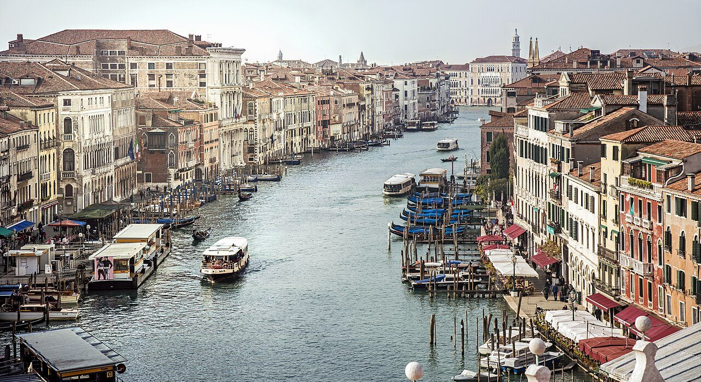

OUR HONEYMOON
ふたりの旅を、
もっと身軽に。
次の角を曲がる前に。
行きたい場所も、いま必要なものも。

マイマップを見やすく使う
まず滞在中の都市を表示。凡例のチェックで不要なレイヤーを隠すと、写真付きの観光ピンを探しやすくなります。
- 観光：その都市の観光レイヤーを表示
- 食事・買出し：食事・スーパーの生活レイヤーを表示
- トイレ：トイレの生活レイヤーを表示
- 経路：ピンの施設リンクからGoogleマップで確認
このリンクは表示位置を変えます。レイヤーの表示状態は地図側で選んでください。旅手帖の保存・日別ルートはマイマップへ自動同期しません。
通信なしの備え：Googleマップのエリア保存と予約票の端末保存を。エリア保存だけでマイマップの写真・独自ピンまで使えるとは限りません。Googleのオフライン利用案内
RIGHT NOW
いま、何を探す？
空模様を確認
公式の予報 ↗選んだ都市の現在と直近3日。旅行日が先の場合の予報ではありません。
取得ボタンで最新の予報を確認できます。
天気：Open-Meteo · CC BY 4.0BEFORE YOU GO
出かける前の、ひと確認
AROUND YOU
すぐ近くで、見つける。
トイレ、水、朝ごはん。観光の途中で必要になる場所を、現地の言葉で探せます。
トイレは、公式の場所一覧も
公式のトイレ案内 ↗A FEW GOOD OPTIONS
観光地のそばで、食事とひと休み
トイレ・食事・スーパーと記念日ディナーの候補。営業時間・価格・利用条件は訪問前に公式で確認。
スーパーで揃えるなら
水、果物、朝食、ヨーグルト、軽食、ティッシュ。買う前にホテルの冷蔵庫・持込条件と、食べる場所を確認。
日本のコンビニのような24時間営業・トイレ・温めサービスがあるとは限りません。
OUR PLACES
あの場所へ、寄り道しよう。
ONE DAY AT A TIME
無理せず、いい一日に。
出発日を設定すると、ホテル11泊の旅の流れを日付に合わせて表示。すべて予定案で、予約済みという意味ではありません。
旅全体の休業・営業時間の注意
この日に歩く順番
観光カードから追加して、上下ボタンで並べ替え。スマートフォン向けに最大5地点です。時間指定の予約を先に優先してください。
ホテルへ戻る
ホテル住所はこのブラウザだけに保存。経路を開くとGoogleマップに渡されます。
移動日の小さなチェック
出発駅・空港名とターミナル、列車番号、荷物の条件、到着後の移動を確認。番線や遅延は当日の公式案内で。
A LITTLE PEACE OF MIND
旅先で困ったら、ここ。
ユーロを円で考える
レートと金額を入れると円の目安が出ます。
ECBの参考レートを見る ↗為替は手動設定。カード会社の手数料等は別途確認。
ふたりの支払いメモ
出発前に揃えておくもの
ふたりの手帖を持ち出す
ホテル・保存した場所・日ごとのルート・支払い・チェックはこのブラウザ内に保存されます。シートとの自動同期や、端末間の自動共有はありません。
書き出したファイルにはホテル住所などが含まれます。ふたりの間で保管・共有してください。
出典と確認日
観光情報は各カードに確認日・出典を記録。トイレや店の掲載は、当日の利用・営業を保証するものではありません。天気は取得時刻を表示し、運行とニュースは外部の最新ページを開きます。